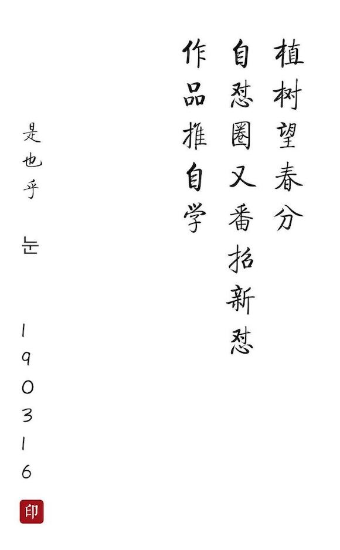

怼周刊_v100¶
~ 预定 190318 2042 发布
...TODO 
- 主编: 大妈
- 责编: Vwan
Timelines 进度¶
~ 记录当周关键事件日期+证据链接
Tasks 任务¶
~ 记述关键共怼任务 (如果没有, 留空)
propose 号召¶
- |蠎周刊 |汇集全球蠎事儿 !-)
- 俺私人嗯哼了5年了
- 邀请大家一起来, 每周嗯哼
- 每周例怼后, 无论是否列席, 大家都在
故事->怼印象中追加当周 top3 感触
Progress 进展¶
~ 整体圈内活跃指标情况(st 专用服务, 尚少使用手册)
## 4 weekly activity:
> total commit: **24**
### top5 git commiter
> gen. 190223 215155.749 (by st v190223.2133)
Vwan : ▇▇▇▇▇▇▇▇▇▇▇▇▇▇▇▇▇ 17.00
justin007755: ▇▇ 2.00
liguanghe : ▇▇ 2.00
Zoe : ▇▇ 2.00
zoejane : ▇ 1.00
Achievements 成果¶
~ 各种成品/半成品 内部知识作品
1 Release published by 1 person
-
Published
v19.03.11
DU99w
7 days ago
6 Issues closed by 1 person
-
Closed
#328
2m[DU_tools]使用手册公募使用手册
2 days ago -
Closed
#362
[RDD] DU4ai 项目, 自述原案
2 days ago -
Closed
#609
1m[讨论] 重构怼周刊发布手册意见征集
2 days ago -
Closed
#618
5d[Task][Help] Python: 发送邮件到指定邮箱（怼圈Gmail Group)
2 days ago -
Closed
#619
5d[Help] 本地安装 termgraph成功，但是无法运行
2 days ago -
Closed
#622
w99[ANN]190309 怼周会 & 周刊组稿
2 days ago
3 Issues created by 2 people
-
Opened
#626
1m [Task] 怼周刊自动化发布流程进展
2 days ago -
Opened
#625
DUw100 [ANN]190316 怼周会 & 周刊征稿
2 days ago -
Opened
#624
5d[TASK] dynalist 自动化打印脚本
3 days ago
1 Unresolved conversation
Sometimes conversations happen on old items that aren’t yet closed. Here is a list of all the Issues and Pull Requests with unresolved conversations.
-
2 new comments
Open
#621
25d[LOG]种一棵事业树(9)
4 days ago
Stories 故事¶
~ 收集各自无法雷同的怼圈真人故事...
impression 怼印象¶
~ 例怼中感触最嗯哼的 top3 感想
@mxclover~~:
-
怼悟
-
如何做计划
- 形式：日计划、周计划、月计划、年计划
- 但是知易行难，尝试从
最小行动开始- 固化时间，形成节奏，对抗焦虑
- 记录下来：进度、用时、备注等
-
学习效能
- 效能跟产出有关，跟外界条件无关
- 用输出倒逼输入，及时跟进状态
- 即使没有产出，也要尝试记录行为

-
什么是职业素养
做事
有始有终，无论结果如何 -
@linfeng365~~:
不要...研究学习方法...回归最简单的...或者说小孩子也能懂的...
比如, 睡眠最重要,困了就睡。
影响睡眠的咖啡,要避免,或少量。
真诚面对问题,真诚去解决。
事太多就减少,效率是不会一下提高。
"混沌定律" 科学证明,未来是不可预期的。也可能是惊人的。
但90% 的今天和昨天一样。明天和今天一样。
@Vwan~~:
- 怼周刊自动化脚本开发、以及进展整理
- 初衷：现学现用python，兼以减少发布流程的手工操作
- 交叉着大妈的目标：提高周刊内容及质量
- 客观数据统计
- 共笔内容提取/聚集
- 挺受益的，邀请有兴趣时间的怼友们也参与。
live 怼生活¶
~ 生活中带有怼范的各种 (投稿后可同时沉淀到 wiki 的2.5 怼生活下)
Recommedations 推荐¶
~ 嗯哼各种怼路上发现的嗯哼...
Postscript 后记¶
~ 怼周刊是什么以及为什么和能怎么...
大妈曰过: 参差多态 才是生机
问题在 参差 的行为是无法形成团队的
Coming together is a beginning;
Keeping together is progress;
Working together is success!
<--- Henry Ford
- 所以, 有了 大妈 随见随怼的持续嗯哼...
- 但是, 想象一年后, 回想几十周前自己作的那些
图样图森破 - 却没现成的资料来出示给后进来嗯哼?
- 不科学, 值得记录的, 就应当有个形式固定下来
- 所以,有了这个
怼周刊(Weekly 4 DU)
What is DUW? Why we make DUW? What are the possibilities of DUW?
Dama said, variety brings vitality. But various behaviors may make us hard to cooperate as a team.
Coming together is a beginning;
Keeping together is progress;
Working together is success!
<--- Henry Ford
That's why Dama keeps on debugging. However, as time goes by, maybe you would not remember these days clearly and spread your experience difficultly. What a pity! The valuable should have a fixed form to be recorded. That's why we make the Weekly for DU.